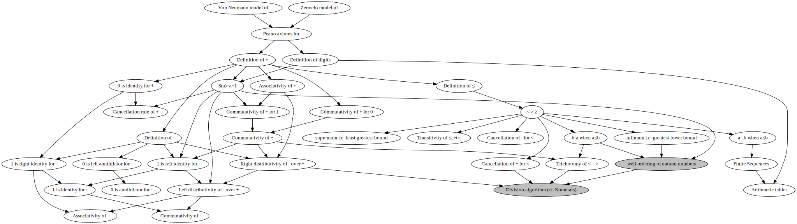

As a cross-check that we have correct naming of the natural numbers ℕ, we shall follow instructions to re-implement the grade school arithmetic tables.
Technically speaking, there is a huge difference between the second-order axiom of (weak natural) induction and the first order axiom schema of (weak natural) induction: there is exactly one second-order ℕ, but many distinguishable first-order ℕ. We have not yet covered the terminology required to explain this non-technically. The instructions we are following, are for the second-order ℕ.
We already had to define 0, to set up checking that we have an instance of the Peano axioms. We next interpret the other digits of the Arabic/Hindu decimal numeration system:
| Name | |
|---|---|
| 1 := S(0) | Intended interpretation of (decimal) digits |
| 2 := S(1) | |
| 3 := S(2) | |
| 4 := S(3) | |
| 5 := S(4) | |
| 6 := S(5) | |
| 7 := S(6) | |
| 8 := S(7) | |
| 9 := S(8) |
We are translating the verbal counting order of the numbers zero through nine, into uses of the successor function S — an unary tally system, so to speak.
We next recursively define addition +:ℕ x ℕ → ℕ
| Name | ||
|---|---|---|
| a + 0 := | a | 0 is the additive identity |
| a + S(b) := | S(a+b) | |
If we avoid standard practice by not using the axiom of infinity, then this cannot be formalized in a set theory that only has sets.
| Inference rule | Proposition | Rationale | |
|---|---|---|---|
| 1. | a ∈ ℕ | Given | |
| 2. | b ∈ ℕ | Given | |
| 3. | c ∈ ℕ | Given | |
| 4. | a+b = a+b | Reflexivity of = | |
| 5. | (a+b)+0 = a+(b+0) | Nonuniform substitution ((a+b)+0,a+(b+0)),(a+b,a+b), definition of + | |
| 6. | (a+b)+c = a+(b+c) | Hypothesis | |
| 7. | S((a+b)+c) = S(a+(b+c)) | Syntactical equivalence Peano axiom for S on (6) | |
| 8. | (a+b)+S(c) = a+S((b+c)) | Definition of + on (7) | |
| 9. | (a+b)+S(c) = a+(b+S(c)) | Definition of + on (8) | |
| 10. | (a+b)+c = a+(b+c) ├ (a+b)+S(c) = a+(b+S(c)) | Syntactical entailment introduction, (6) and (9) | |
| 11. | (a+b)+c = a+(b+c) | axiom of (weak natural) induction, (5) and (10) | |
| Associativity of + | |||
Having to prove associativity and commutativity of addition + for natural numbers a,b, is intentional: these are reality checks that addition + has been defined correctly. It is simpler to start by proving associativity of +. That this structurally looks like associativity of & and associatvity of ∨, is an intentional naming convention. As with the other two associativity rules, we consider a+b+c defined for natural numbers and equal to both (a+b)+c and a+(b+c).
| Proposition | Rationale | |
|---|---|---|
| 1. | a ∈ ℕ | Given |
| 2. | a+S(0) = S(a+0) | Definition of + |
| 3. | a+S(0) = S(a) | Definition of + on (2) |
| 4. | a+1 = S(a) | Definition of 1 on (3) |
| 5. | S-1(a+1) = S-1(S(a)) | Syntactical equivalence Peano axiom for S on (4) |
| 6. | S-1(a+1) = a | evaluate S-1(S(a)) on (5) |
| a ∈ ℕ ├ S(a) = a+1 | ||
| a ∈ ℕ ├ S-1(a+1) = a | ||
We next confirm that the Peano successor function S, corresponds to adding 1 to a.
| Inference rule | Proposition | Rationale | |
|---|---|---|---|
| 1. | b ∈ ℕ | Given | |
| 2. | 0+0=0+0 | Reflexivity of equality = | |
| 3. | 0+b = b+0 | Hypothesis | |
| 4. | S(0+b) = S(b+0) | Syntactical equivalence Peano axiom for S on (3) | |
| 5. | S(0+b) = S(b) | [b/b+0], definition of + on (4) | |
| 6. | 0+S(b) = S(b) | [0+S(b)/S(0+b)], definition of + on (5) | |
| 7. | 0+S(b) = S(b)+0 | [S(b)+0/S(b)], definition of + on (6) | |
| 8. | 0+b = b+0 ├ 0+S(b) = S(b)+0 | Syntactical entailment introduction, (3) and (7) | |
| 9. | 0+b = b+0 | axiom of (weak natural) induction, (2) and (8) | |
| Commutativity of + for 0 | |||
| 10. | 1+b = b+1 | Hypothesis | |
| 11. | S(1+b) = S(b+1) | Syntactical equivalence Peano axiom for S on (11) | |
| 12. | 1+S(b) = b+S(1) | Definition of + on (10) | |
| 13. | 1+S(b) = b+(1+1) | S(a) = a+1 | |
| 14. | 1+S(b) = (b+1)+1 | associativity of + | |
| 15. | 1+S(b) = S(b)+1 | S(a) = a+1 | |
| 16. | 1+b = b+1 ├ 1+S(b) = S(b)+1 | Syntactical entailment introduction, (10) and (15) | |
| 9. | 1+b = b+1 | axiom of (weak natural) induction, (10) and (16) | |
| Commutativity of + for 1 | |||
| Inference rule | Proposition | Rationale | |
|---|---|---|---|
| 1. | a ∈ ℕ | Given | |
| 2. | b ∈ ℕ | Given | |
| 3. | a+b = b+a | Hypothesis | |
| 4. | S(a+b) = S(b+a) | Syntactical equivalence Peano axiom for S on (3) | |
| 5. | a+S(b) = b+S(a) | Definition of + on (4) | |
| 6. | a+(b+1) = b+S(a) | S(a) = a + 1 | |
| 7. | a+(1+b) = b+S(a) | Commutativity of + for 1 | |
| 8. | (a+1)+b = b+S(a) | associativity of + | |
| 9. | S(a)+b = b+S(a) | S(a) = a + 1 | |
| 10. | a+b = b+a ├ S(a)+b = b+S(a) | Syntactical entailment introduction, (3) and (9) | |
| 11. | a+b = b+a | axiom of (weak natural) induction, commutativity of + for 0 and (3) | |
| Commutativity of + | |||
We next prove our basis case for commutativity of +, 0+a = a+0. Proving 1+a = a+1 was done ex post facto, specifically because the final proof of commutativity of + needed that to be valid.
| Inference rule | Proposition | Rationale | |
|---|---|---|---|
| 1. | a ∈ ℕ | Given | |
| 2. | b ∈ ℕ | Given | |
| 3. | c ∈ ℕ | Given | |
| 4. | a+0=b+0 | Hypothesis | |
| 5. | a=b | 0 is additive identity (definition) | |
| 6. | a+0=b+0 ├ a=b | Syntactical entailment introduction, (3) and (4) | |
| Rationale for (4) is reversible, so we actually have | |||
| 6a. | a+0=b+0 ⟛ a=b | ||
| 7. | a+c=b+c ├ a=b | Hypothesis | |
| 8. | a+S(c)=b+S(c) | Hypothesis | |
| 9. | a+c+1=b+c+1 | S(a)=a+1 | |
| 10. | S(a+c)=S(b+c) | S(a)=a+1 | |
| 11. | a+c=b+c | Peano axiom of syntactical equivalence for S | |
| 12. | a=b | (Hypothesis) | |
| 13. | a+S(c)=b+S(c) ├ a=b | Syntactical entailment introduction, (8) and (12) | |
| 14. | (a+c=b+c ├ a=b) ├ (a+S(c)=b+S(c) ├ a=b) | Syntactical entailment introduction, (7) and (13) | |
| 15. | a+c=b+c ├ a=b | axiom of (weak) natural induction, (6) and (14) | |
| 16. | a=b | Hypothesis | |
| 17. | a+c=a+c | Reflexivity of = | |
| 18. | a+c=b+c | Nonuniform substitution (a,b)/(a,a) on (17) by (16) | |
| 19. | a=b ├ a+c=b+c | Syntactical entailment introduction, (16) and (18) | |
| 20. | a+c=b+c ⟛ a=b | Definiton of syntactical equivalence, (15) and (19) | |
| Cancellation rule for + | |||
We next verify the cancellation rule for addition +. The axiom schema of (weak natural) induction is not a valid justification, here. This is why the first-order axiomatizations of ℕ do not try to define addition +, multiplication · or the total ordering ≤ from the successor function S.
Since all of these proofs are based on non-uniform substitutions, they are robust against both our choice of logic, and choice of set theory. They would work similarly even if we were approaching this from lambda calculus, i.e. took functions to be undefined and had to define mathematical containers in terms of functions.
| Properties of + for ℕ | |
|---|---|
| a+0 = a | 0 is additive identity of + (definition) |
| (a+b)+c = a+(b+c) | Associativity of + |
| a+b = b+a | Commutativity of + |
| a+c=b+c ⟛ a=b | Cancellation rule for + |
It is arbitrary whether to define multiplication ·, or the total linear ordering ≤, next. We next recursively define multiplication ·:ℕ x ℕ → ℕ
| Name | ||
|---|---|---|
| a·0 := | 0 | 0 is the right multiplicative annihilator |
| a·S(b) := | a+a·b | |
| Proposition | Rationale | |
|---|---|---|
| 1. | a ∈ ℕ | Given |
| 2. | a·S(0) = a+a·0 | Definition of · |
| 3. | a·1 = a+a·0 | Definition of 1 |
| 4. | a·1 = a+0 | 0 is multiplicative annihilator |
| 5. | a·1 = a | 0 is additive identity |
| 1 is right multiplicative identity | ||
| Inference rule | Proposition | Rationale | |
|---|---|---|---|
| 1. | a ∈ ℕ | Given | |
| 2. | 1·0 = 0 | Definition of · | |
| 3. | 1·a = a | Hypothesis | |
| 4. | 1·S(a) = 1·S(a) | Reflexivity of = | |
| 5. | 1·S(a) = 1+1·a | Definition of · on (4) | |
| 6. | 1·S(a) = 1+a | (3) on (5) | |
| 7. | 1·S(a) = a+1 | Commutativity of + on (6) | |
| 8. | 1·S(a) = S(a) | S(a) = a+1 | |
| 9. | 1·a = a ├ 1·S(a) = S(a) | Syntactical inference introduction, (3) and (8) | |
| 10. | 1·a = a | axiom of (weak natural) induction, (2) and (9) | |
| 1 is left multiplicative identity | |||
We adopt the usual precedence convention, i.e. · is higher precedence than + so a+a·b = a+(a·b)
Having to prove all of the following is intentional: 1 is multiplicative identity, commutativity of ·, associativity of · distributivity of · over +. As with addition +, this is a cross-check that multiplication · has been defined correctly. We start by proving 1 is the multiplicative identity. This also establishes commutativity of 1 for ·
We next verify that 0 is the left annihilator of ·. This also establishes commutativity of 0 for ·.
| Inference rule | Proposition | Rationale | |
|---|---|---|---|
| 1. | a ∈ ℕ | Given | |
| 2. | 0·0 = 0 | Definition of · | |
| 3. | 0·a = 0 | Hypothesis | |
| 4. | 0·S(a) = 0·S(a) | Reflexivity of = | |
| 5. | 0·S(a) = 0+0·a | Definition of + on (5) | |
| 6. | 0·S(a) = 0+0 | (3) on (5) | |
| 7. | 0·S(a) = 0 | Definition of + on (6) | |
| 8. | 0·a = 0 ├ 0·S(a) = 0 | /td> | Syntactical entailment introduction, (3) and |
| 9. | 0·a = 0 | axiom of weak natural induction, (2) and (8) | |
| 0 is left annihilator of · | |||
| Inference rule | Proposition | Rationale | |
|---|---|---|---|
| 1. | a ∈ ℕ | Given | |
| 2. | b ∈ ℕ | Given | |
| 3. | c ∈ ℕ | Given | |
| 4. | 0=0 | Reflexivity of = | |
| 5. | 0+0=0 | Definition of + | |
| 6. | (a·0)+(b·0)=(a+b)·0 | 0 is right annhilator of · (definition) | |
| 7. | (a·c)+(b·c)=(a+b)·c | Hypothesis | |
| 8. | (a+b)·S(c)=(a+b)·S(c) | Reflexivity of = | |
| 9. | (a+b)·S(c)=(a+b)+(a+b)·c | Definition of · on (8) | |
| 10. | (a+b)·S(c)=(a+b)+((a·c)+(b·c)) | (7) on (9) (we cannot use generalized rearrangement of +, only associativity and commutativity) | |
| 11. | (a+b)·S(c)=((a+b)+(a·c))+(b·c) | associativity of + on (10) | |
| 12. | (a+b)·S(c)=(a+(b+(a·c)))+(b·c) | associativity of + on (11) | |
| 13. | (a+b)·S(c)=(a+((a·c)+b))+(b·c) | commutativity of + on (12) | |
| 14. | (a+b)·S(c)=((a+(a·c))+b)+(b·c) | associativity of + on (14) | |
| 15. | (a+b)·S(c)=a·S(c)+b+b·c | Definition of · on (14) (now can use simplified notation from associativity of +) | |
| 16. | (a+b)·S(c)=a·S(c)+b·S(c) | Definition of · on (15) | |
| 17. | (a·c)+(b·c)=(a+b)·c ├ (a+b)·S(c)=a·S(c)+b·S(c) | Syntactical entailment introduction, (7) and (16) | |
| 18. | (a·c)+(b·c)=(a+b)·c | axiom of (weak natural) induction, (6) and (17) | |
| right distributivity of · over + | |||
I wasn't able to check either commutativity of ·, or associativity of ·, at this point. We next verify right distributivity of · over +, and left distributivity of · over +, in that order.
| Inference rule | Proposition | Rationale | |
|---|---|---|---|
| 1. | a ∈ ℕ | Given | |
| 2. | b ∈ ℕ | Given | |
| 3. | c ∈ ℕ | Given | |
| 4. | 0=0 | Reflexivity of = | |
| 5. | 0=0+0 | Definition of + | |
| 6. | (0·b)+(0·c)=0·(b+c) | 0 is left annihilator of · | |
| 7. | (a·b)+(a·c)=a·(b+c) | Hypothesis | |
| 8. | S(a)·(b+c)=S(a)·(b+c) | Reflexivity of = | |
| 9. | (a+1)·(b+c)=S(a)·(b+c) | S(a)=a+1 on (8) | |
| 10. | a·(b+c)+1·(b+c)=S(a)·(b+c) | right distributivity of · over + on (9) | |
| 11. | (a·b)+(a·c)+1·(b+c)=S(a)·(b+c) | (7) on (10) | |
| 12. | (a·b)+((a·c)+(b+c))=S(a)·(b+c) | 1 is left identity of · on (11) (associativity of + notational shortcut unusable now) | |
| 13. | (a·b)+(((a·c)+b)+c)=S(a)·(b+c) | associativity of + on (12) | |
| 14. | (a·b)+((b+(a·c))+c)=S(a)·(b+c) | commutativity of + on (13) | |
| 15. | ((a·b)+(b+(a·c)))+c=S(a)·(b+c) | associativity of + on (14) | |
| 16. | (((a·b)+b)+(a·c))+c=S(a)·(b+c) | associativity of + on (15) | |
| 17. | ((a·b)+b)+((a·c)+c)=S(a)·(b+c) | associativity of + on (16) | |
| 18. | ((a·b)+1·b)+((a·c)+1·c)=S(a)·(b+c) | 1 is left identity for · on (17) | |
| 19. | (a+1)·b+(a+1)·c=S(a)·(b+c) | right distributivity of · over + on (18) | |
| 20. | S(a)·b+S(a)·c=S(a)·(b+c) | S(a)=a+1 on (19) | |
| 21. | (a·b)+(a·c)=a·(b+c) ├ S(a)·b+S(a)·c=S(a)·(b+c) | syntactical entailment introduction, (7) and (20) | |
| 22. | (a·b)+(a·c)=a·(b+c) | axiom of (weak natural) inductiion, (6) and (21) | |
| left distributivity of · over + | |||
| Inference rule | Proposition | Rationale | |
|---|---|---|---|
| 1. | a ∈ ℕ | Given | |
| 2. | b ∈ ℕ | Given | |
| 3. | a·b = b·a | Hypothesis | |
| 4. | S(a)·b = S(a)·b | Reflexivity of = | |
| 5. | S(a)·b = (a+1)·b | S(a)=a+1 on (4) | |
| 6. | S(a)·b = a·b+1·b | right distributivity of · over + on (5) | |
| 7. | S(a)·b = 1·b+a·b | commutativity of + on (6) | |
| 8. | S(a)·b = 1·b+b·a | (3) on (7) | |
| 9. | S(a)·b = b·1+b·a | commutativity of 1 for · on (8) | |
| 10. | S(a)·b = b·(1+a) | left distributivity of · over + on (9) | |
| 11. | S(a)·b = b·(a_1) | commutativity of + on (10) | |
| 12. | S(a)·b = b·S(a) | S(a)=a+1 on (11) | |
| commutativity of · | |||
We next verify commutativity of · and associativity of ·. The exact order doesn't matter; their proofs are independent of each other.
| Inference rule | Proposition | Rationale | |
|---|---|---|---|
| 1. | a ∈ ℕ | Given | |
| 2. | b ∈ ℕ | Given | |
| 3. | c ∈ ℕ | Given | |
| 4. | 0=0 | Reflexivity of = | |
| 5. | (a·b)·0=a·0 | definition of · | |
| 6. | (a·b)·0=a·(b·0) | definition of · | |
| 7. | (a·b)·c=a·(b·c) | Hypothesis | |
| 8. | (a·b)·S(c)=(a·b)·S(c) | Reflexivity of = | |
| 9. | (a·b)·S(c)=(a·b)·(c+1) | S(a)=a+1 on (8) | |
| 10. | (a·b)·S(c)=(a·b)·c+(a·b)·1 | left distributivity of · over + on (9) | |
| 11. | (a·b)·S(c)=a·(b·c)+(a·b)·1 | (7) on (10) | |
| 12. | (a·b)·S(c)=a·(b·c)+a·b | 1 is right identity for · on (11) | |
| 13. | (a·b)·S(c)=a·(b·c)+a·(b·1) | 1 is right identity for · on (12) | |
| 14. | (a·b)·S(c)=a·(b·c+b·1) | left distributivity of · over + on (13) | |
| 15. | (a·b)·S(c)=a·(b·(c+1)) | left distributivity of · over + on (14) | |
| 16. | (a·b)·S(c)=a·(b·S(c)) | S(a)=a+1 on (15) | |
| 17. | (a·b)·c=a·(b·c) ├ (a·b)·S(c)=a·(b·S(c)) | Syntactical entailment introduction, (7) and (16) | |
| 18. | (a·b)·c=a·(b·c) | axiom of (weak natural) induction, (6) and (17) | |
| associativity of · | |||
At this point, we have built out more than enough to allow both setting up Gödel numbering, and the arithmetic version of the diagonalization argument that triggers Gödel's Second Incompleteness Theorem.
| Properties of · for ℕ | |
|---|---|
| a·0 = 0 | 0 is annhilator of · (definition) |
| a·1 = a | 1 is identity of · |
| (a·b)·c = a·(b·c) | Associativity of · |
| a·b = b·a | Commutativity of + |
We next define ≤ for natural numbers a,b by
a ≤ b := (Ec ∈ ℕ)(a+c = b)
If c exists, it is an easy verification (using the cancellation rule for +) that it is unique. We can define the function b-a:{(a,b) ∈ ℕ x ℕ : a ≤ b} → ℕ as having the value c, provided by using existential instantiation on the definition of a ≤ b. (Eliminating this restriction, is one motivation for extending the natural numbers to the integers.)
It is provable for natural numbers a,b,c (leaning heavily on existential instantiation) that
| 0 ≤ a | 0 is the least natural number | |
| a=b ├ | a ≤ b | |
| a=b ⟛ | 0 = b-a | |
| a ≤ b, b ≤ c ├ | a ≤ c | Transitivity of ≤ |
| a ≤ b ├ | a+c ≤ b+c | |
| a ≤ b ├ | a·c ≤ b·c |
We have the following notational conventions:
| Inference rule | Proposition | Rationale | |
|---|---|---|---|
| 1. | a ∈ ℕ | Given | |
| 2. | b ∈ ℕ | Given | |
| 3. | a<b | Hypothesis | |
| 4. | a ≤ b & a ≠ b | Definition of < | |
| 5. | a ≤ b | Conjunction elimination on (4) | |
| 6. | a ≠ b | Conjunction elimination on (4) | |
| 7. | (Ec ∈ ℕ)(a+c = b) | Definition of ≤ | |
| 8. | (t1 ∈ ℕ) & (a+t1 = b) | Existential instantiation | |
| 9. | t1 ∈ ℕ | Conjunction elimination on (8) | |
| 10. | a+t1 = b | Conjunction elimination on (8) | |
| 11. | t1 = 0 | Hypothesis (we're working around not having subtraction) | |
| 12. | a+0 = b | [0/t1] on (10) by (11) | |
| 13. | a = b | 0 is additive identity | |
| 14. | t1 = 0 ├ a = b | Syntactical entailment introduction, (11) and (13) | |
| 15. | t1 ≠ 0 | modus tollens for ├ (14) and (6) | |
| 16. | t1 ∈ ℕ\{0} | Definition of set difference \ | |
| 17. | (Ed ∈ ℕ\{0})(a+d = b) | Existential instantiation | |
| 18. | a<b ├ (Ed ∈ ℕ\{0})(a+d = b) | Syntactical entailment introduction, (3) and (17) | |
| Reverse direction is similar technique but simpler | |||
| Description of < | |||
| a<b ⟛ (Ed ∈ ℕ\{0})(a+d = b) | |||
At this point, it matters that for both SZermelo(x) := {x} and SVon Neumann(x) := x ∪ {x} that (Ax ∈ Set)(0 ≠ S(x)); that means 0=x is a classical logic statement for x ∈ {0} ∪ Range(S), so we can use the classical logic version of modus tollens for ├ regardless of our choice of truth-table described logic.
| Proposition | Rationale | |
|---|---|---|
| 1. | a ∈ ℕ | Given |
| 2. | 1 ≤ a | Hypothesis |
| 3. | a=a | Reflexivity of = |
| 4. | S(S-1>(a))=a | Expand partial identity function as S o S-1, by (2) |
| 5. | S-1(a)+1=a | S(a)=a+1 on (4) |
We can refine the initial summary for ≤ to account for < as well, again leaning heavily on existential instantiation:
| a < b ⟛ | 0 < b-a | |
| a < b, b ≤ c ├ | a < c | Transitivity of < and ≤ |
| a ≤ b, b < c ├ | a < c | |
| a < c | Transitivity of < | |
| a < b ⟛ | a+c < b+c | Cancellation of + for < |
| a < b & 0<c ⟛ | a·c < b·c | Cancellation of · for < |
| 1 ≤ a ├ | S-1(a)+1=a when 1≤a |
We have the following notational conventions: when a<b, a≤b, b<c, b≤c are defined, and it is definite that b is not a truth value, we define:
If a and c are natural numbers such that a≤c, we define a...c := {x ∈ ℕ: a≤x≤b }. (This definition can be made more generally, but we are nowhere close to that.)
| Inference rule | Proposition | Rationale | |
|---|---|---|---|
| 1. | a ∈ ℕ | Given | |
| 2. | b ∈ ℕ | Given | |
| 3. | b < b+1 | Description of < | |
| Want a < b ∨ a=b ∨ a > b as final hypothesis | |||
| 4. | a < b | Hypothesis | |
| 5. | a < b+1 | Transitivity of <, (4) and (3) | |
| 6. | a < b ├ a < b+1 | Syntactical entailment introduction, (4) and (5) | |
| 7. | a=b | Hypothesis | |
| 8. | a<b+1 | Nonuniform substitution (a,b)/(b,b) on (3) by (7) | |
| 9. | a=b ├ a<b+1 | Syntactical entailment introduction, (7) and (8) | |
| 10. | a < b ∨ a=b ├ a<b+1 | Proof by cases, (6) and (9) | |
| 10a. | a < b ∨ a=b ├ a<S(b) | S(a)=a+1 on (10) | |
| 11. | a > b | Hypothesis (:= b < a) | |
| 12. | 1 ≤ a-b | Description of < on (11) | |
| 13. | a = b+(a-b) | Definition of - on (11) | |
| 14. | a = b+S-1(a-b)+1 | S-1(a)+1=a when 1≤a on (13) | |
| 15. | a = b+1+S-1(a-b) | Commutativity of + on (14) | |
| 16. | a = S(b)+S-1(a-b) | S(a)=a+1 on (15) | |
| 17. | a - S(b) = S-1(a-b) | Definition of - | |
| 18. | S(b) ≤ a | Definition of - on (17) | |
| 19. | S(b)=a ∨ S(b) < a | Definition of < on (18) | |
| 20. | a=S(b) ∨ S(b) < a | Reflexivity of = on (19) | |
| 21. | a=S(b) ∨ a > S(b) | Definition of > on (20) | |
| 22. | a > b ├ a=S(b) ∨ a > S(b) | Syntactical entailment introduction, (11) and (21) | |
| 23. | a < b ∨ a=b ∨ a > b | Hypothesis | |
| 24. | a < S(b) ∨ a=S(b) ∨ a > S(b) | Proof by cases, (23) and (10a) and (22) | |
| 25. | a < b ∨ a=b ∨ a > b ├ a < S(b) ∨ a=S(b) ∨ a > S(b) | Syntactical entailment introduction, (23) and (24) | |
| 26. | a < b ∨ a=b ∨ a > b | axiom of weak natural induction, 0 is the least natural number and (25) | |
| Total ordering of ℕ by ≤, i.e. Trichotomy of <, =, > | |||
We then verify that the natural numbers ℕ are totally ordered with ≤
| Adapted from Karl Stromberg's An Introduction To Classical Real Analysis | |||
| Inference rule | Proposition | Rationale | |
|---|---|---|---|
| 1. | A ⊆ ℕ | Given | |
| 2. | ∅ ≠ A | Given | |
| 3. | L := {n ∈ ℕ : (Aa ∈ A)(n ≤ a)} | Local definition: set of nonstrict lower bounds of A | |
| 4. | 0 ∈ L | 0 is least bound of the natural numbers | |
| 5. | ∅ = A ∩ L | Hypothesis: A does not contain any of its lowest bounds | |
| 6. | b ∈ L | Hypothesis | |
| 7. | b ∉ A | modus ponendo tollens for ∩, (5) and (6) | |
| 8. | a1 ∈ A & b ≤ a1 | Universal instantiation on (3), (6) | |
| 9. | a1 ∈ A | Conjunction elimination on (8) | |
| 10. | b ≤ a1 | Conjunction elimination on (8) | |
| 11. | b+(a1-b) = a1 | Definition of ≤ (10) and (11) | |
| 12. | a1 ∉ L | modus ponendo tollens for ∩, (5) and (9) | |
| Zermelo-Frankel set theories, or classical logic | |||
| 13. | b ≠ a1 | (6) and (12) | |
| 14. | b < a1 | Definition of < (10) and (13) | |
| 15. | 1 ≤ a1 -b | Description of < on (14) | |
| 16. | b+1+S-1(a1-b) = a1 | S-1(a)+1=a when 1≤a on (15) | |
| 17. | S(b)+S-1(a1-b) = a1 | S(a)=a+1 on (16) | |
| 18. | S(b) ≤ a1 | Definition of < on (17) | |
| 19. | (Aa ∈ A)(S(b) ≤ a) | Universal instantiation on (18) | |
| 20. | S(b) ∈ L | Definition of L on (19) | |
| 21. | b ∈ L ├ S(b) ∈ L | Syntactical entailment introduction, (6) and (20) | |
| 22. | (Ab ∈ ℕ)(b ∈ L) | axiom of (weak natural) induction, (4) and (21) | |
| 23. | ℕ ⊆ L | Definition of ⊆ | |
| ~Intuitionistic | |||
| 19. | ℕ=L | X ⊆ {x0 ∈ X : φ(x0)} ├ X={x ∈ X : φ(x)} on (3) and (18) | |
| 20. | ∅ = A ∩ ℕ | substitute (19) into (5) | |
| 21. | ∅ = A | (1) and (20) | |
| 22. | ∅ = A ∩ L ├ ∅ = A | Syntactical entailment introduction, (5) and (21) | |
| Classical | |||
| 23. | ∅ ≠ A ∩ L | modus tollens for ├, (22) and (2) | |
| 24. | (Ex ∈ Set)(x ∈ A ∩ L) | Definition of equality on (23) | |
| A contains at least one of its lowest bounds | |||
| With some extra work using existentiial instantiation and generalization, we can get | |||
| (E!x ∈ ℕ)(x ∈ A ∩ L) | |||
For a non-empty subset A ⊆ ℕ, if there exists b ∈ ℕ such that b ≤ x for all x ∈ A, we say b is a lower bound of A. A lower bound inf of A for which inf ≥ b for any lower bound b, is said to be the greatest lower bound i.e. infimum of the subset A.
Likewise, if there exists u ∈ ℕ such that u ≥ x for all x ∈ A, we say u is an upper bound of A. An upper bound sup of A for which sup ≤ u for any upper bound b, is said to be the least upper bound i.e. supremum of the subset A.
Since ℕ has no upper bound (by the definition of successor function S), sup:𝒫(ℕ)\{∅} → ℕ is only a partial function.
There are extreme difficulties in proving well-ordering of ℕ, i.e. inf:𝒫(ℕ)\{∅} → ℕ is a function, in the presence of non-classical truth values. The problem is that in order to allow equality to justify substitutions, we have to say that if x ∈ A ↦ false while x ∈ B ↦ unknown, that ~(A=B ↦ true) even though x is not a member of either A or B. That is, the working technique for defining the subset relation ⊆ to hold up against non-classical truth values, does not work for set or class equality itself.
Proving that two nonstrict lower bounds of A, both in A, are equal is left as an exercise.
For a domain of discourse A on which equality = is defined, we define (E!x ∈ A) by the syntactical equivalence schema
(Ex ∈ A)(φ(x)),(φ(x)=φ(y) ├ x=y) ⟛ (E!x ∈ A)(φ(x))
(We would prefer to use := here to justify substitutions for non-classical logics, but that would require using an inference rule as an argument to logical and &. I am staying within pre-existing notational abuses.)
Note that the final listed step (24) is correct as-is for both the Von Neumann and Zermelo models of the natural numbers, even for the set theories with ur-elements. This is reasonable, since both models work just fine in the set theories without ur-elements: they start with the empty set (which contains no elements at all), and both choices of the successor function S:Set → Set do not directly introduce ur-elements. Actually proving this, requires defining hereditary sets.
For now, we shall consider the well-ordering of the natural numbers proven for classical logic only, for all of the set theories we are considering.
It is a mechanical verification that for natural numbers a, b such that a≤b, that sup a...b = b and inf a...b = a.
Abusing terminology that is properly defined elsewhere, we say that for any natural number n
It is a routine verification that neither of these has a supremum. We also have, from the trichotomy property:
| inf {x ∈ ℕ: n≤x} = | n |
| inf {x ∈ ℕ: n<x} = | S(n) |
| 0<n ├ 0...n ∪ {x ∈ ℕ: n<x} = | ℕ |
The third statement, depends on 0...n being defined with the subset axiom (schema) as a subset of ℕ, to be provable for the truth-table describable non-classical logics we are considering.
| + | 0 | 1 | 2 | 3 | 4 | 5 | 6 | 7 | 8 | 9 |
|---|---|---|---|---|---|---|---|---|---|---|
| 0 | 0 | 1 | 2 | 3 | 4 | 5 | 6 | 7 | 8 | 9 |
| 1 | 1 | 2 | 3 | 4 | 5 | 6 | 7 | 8 | 9 | 10 |
| 2 | 2 | 3 | 4 | 5 | 6 | 7 | 8 | 9 | 10 | 11 |
| 3 | 3 | 4 | 5 | 6 | 7 | 8 | 9 | 10 | 11 | 12 |
| 4 | 4 | 5 | 6 | 7 | 8 | 9 | 10 | 11 | 12 | 13 |
| 5 | 5 | 6 | 7 | 8 | 9 | 10 | 11 | 12 | 13 | 14 |
| 6 | 6 | 7 | 8 | 9 | 10 | 11 | 12 | 13 | 14 | 15 |
| 7 | 7 | 8 | 9 | 10 | 11 | 12 | 13 | 14 | 15 | 16 |
| 8 | 8 | 9 | 10 | 11 | 12 | 13 | 14 | 15 | 16 | 17 |
| 9 | 9 | 10 | 11 | 12 | 13 | 14 | 15 | 16 | 17 | 18 |
| · | 0 | 1 | 2 | 3 | 4 | 5 | 6 | 7 | 8 | 9 |
|---|---|---|---|---|---|---|---|---|---|---|
| 0 | 0 | 0 | 0 | 0 | 0 | 0 | 0 | 0 | 0 | 0 |
| 1 | 0 | 1 | 2 | 3 | 4 | 5 | 6 | 7 | 8 | 9 |
| 2 | 0 | 2 | 4 | 6 | 8 | 10 | 12 | 14 | 16 | 18 |
| 3 | 0 | 3 | 6 | 9 | 12 | 15 | 18 | 21 | 24 | 27 |
| 4 | 0 | 4 | 8 | 12 | 16 | 20 | 24 | 28 | 32 | 36 |
| 5 | 0 | 5 | 10 | 15 | 20 | 25 | 30 | 35 | 40 | 45 |
| 6 | 0 | 6 | 12 | 18 | 24 | 30 | 36 | 42 | 48 | 54 |
| 7 | 0 | 7 | 14 | 21 | 28 | 35 | 42 | 49 | 56 | 63 |
| 8 | 0 | 8 | 16 | 24 | 32 | 40 | 48 | 56 | 64 | 72 |
| 9 | 0 | 9 | 18 | 27 | 36 | 45 | 54 | 63 | 72 | 81 |
We next consider an entry in the multiplication table: 3·5=15. We have not yet defined 15, but have been told that we should have 15=10+5. Likewise we have the entry 3·7 = 21, and we should have 21=20+1 i.e. 2·10+1.
Philosophically, we should distinguish between the natural numbers 0 through 9, and the textual glyphs 0 through 9. The numbers are definitely mathematical objects; it is not clear that the textual glyphs are mathematical objects. In the set theories with ur-elements, we can talk about functions with mathematical range textual glyphs without formal issue. Following prior art, we interpret the example numerals as follows:
| Numeral | Partial function ℕ → "textual glyphs" represented by numeral | Domain ⊆ ℕ | Range ⊆ {0,1,2,3,4,5,6,7,8,9} |
| 3 | 0 ↦ 3 | {0} | {3} |
| 5 | 0 ↦ 5 | {0} | {5} |
| 7 | 0 ↦ 7 | {0} | {7} |
| 15 | 0 ↦ 5 1 ↦ 1 | {0,1} i.e. 0...1 | {1,5} |
| 21 | 0 ↦ 1 1 ↦ 2 | {0,1} i.e. 0...1 | {1,2} |
This is promising. Next, introduce a "thin translation partial function" ToGlyph:ℕ → "textual glyphs" whose domain is the natural numbers {0,1,2,3,4,5,6,7,8,9}, whose range is {0,1,2,3,4,5,6,7,8,9}, and that looks like the identity function x ↦ x. Then, define
10 := S(9)
Let X be a mathematical collection. For a,b ∈ ℕ with a ≤b: we say a finite sequence in X is a function (xj)j=a...b with domain {x ∈ ℕ : a ≤ x & x ≤ b } and range contained in X. The element xj is called the jth term of the sequence.
This definition is chosen, so that numerals can be interpreted as finite sequences that represent numbers. (A proper buildout of this would use the division theorem, and some other machinery. We just want to replicate the arithmetic tables.)
| Numeral | Finite sequence, range textual glyphs | Corresponding natural number (glyphs converted to natural numbers with ToGlyph-1) |
| 3 | 0 ↦ 3 | 3·1 |
| 5 | 0 ↦ 5 | 5·1 |
| 7 | 0 ↦ 7 | 7·1 |
| 15 | 0 ↦ 5 1 ↦ 1 | 1·10+5·1 |
| 21 | 0 ↦ 1 1 ↦ 2 | 2·10+1·1 |
What the division theorem and extra machinery (e.g., sum of a finite sequence) would do, is tell us not only that each numeral corresponded to a single natural number, but that each natural number had a single numeral.
Now, suppose that we had not memorized the addition or multiplication tables. What physical process would let us recreate them, using just copy-paste techniques?
The key, is that the textual representation, i.e. notation, of substitutions (uniform, simulataneous, and nonuniform) have domain and range, finite sequences of textual glyphs. So, if the encoding from the mathematics to the finite sequences of textual glyphs is fixed, then we would expect that if two textual glyph sequences are equal, then the corresponding mathematical objects are equal. That is: we can mathematically model, what we have been doing when writing up proofs in the tabular format.
| Proposition | Rationale | |
|---|---|---|
| 1. | 2·2 = 2·2 | Reflexivity of = |
| 2. | 2·2 = 2+2·1 | Definition of · on (1) |
| 3. | 2·2 = 2+2 | 1 is multiplicative identity on (2) |
| 4. | 2·2 = 2+S(1) | Definition of 2 on (3) |
| 5. | 2·2 = S(2+1) | Definition of + on (4) |
| 6. | 2·2 = S(2+S(0)) | Definition of 1 on (5) |
| 7. | 2·2 = S(S(2+0)) | Definition of + on (6) |
| 8. | 2·2 = S(S(2)) | 0 is additive identity on (7) |
| 9. | 2·2 = S(3) | 0 is additive identity on (8) |
| 10. | 2·2 = 4 | 0 is additive identity on (9) |
As an illustration, let's work this for 2·2 = 4: the smallest entry which we don't have a direct rule already recorded.
Each entry in the Proposition column, physically is the textual representation of a statement; this textual representation is also a (non-unique) finite sequence of textual glyphs. The rationale column records which nonuniform substitutions were used, on which statements. In those tabular formatted proofs with Inference Rule columns, those entries also were physically textual representations of inference rules, that also were finite sequences of textual glyphs.
So we should be able to re-create the addition and multiplication table entries, by verifying no more than one hundred ten equality statements. For this exercise, the two digit numerals yx are to be considered as representing the natural number x+10·y.
Next: Numerals